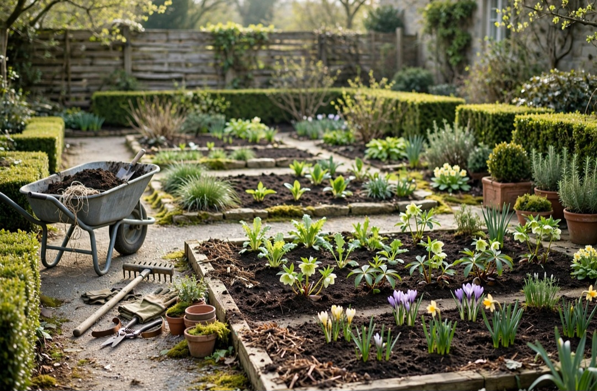

En este artículo
Introducción
Decorar las paredes permite transformar una habitación sin obras, polvo ni cambios permanentes. Con una buena planificación, cuadros, espejos, estantes ligeros, textiles y color pueden aportar personalidad respetando las proporciones y el uso cotidiano.
Antes de realizar cambios, conviene observar las condiciones reales, medir y definir qué quieres mejorar. Una planificación sencilla evita compras impulsivas y permite que cada elemento tenga una función clara.
Cuadros, láminas y fotografías
Antes de colgar nada, observa la pared completa y su relación con los muebles. Una composición sobre un sofá debe dialogar con su anchura; una pieza sobre una consola necesita suficiente presencia para no parecer perdida. Coloca primero las obras en el suelo y prueba varias distribuciones. También puedes recortar plantillas de papel con el tamaño real y fijarlas temporalmente para comprobar altura y separación.
No es necesario que todos los marcos sean idénticos. Repetir un acabado, una gama cromática o una temática puede unir piezas distintas. Las fotografías familiares, ilustraciones y obras adquiridas con el tiempo suelen producir un resultado más personal que un conjunto comprado únicamente para llenar una pared.
La altura es importante. Como referencia visual, el centro de una obra suele funcionar cerca de la altura de los ojos, aunque sobre muebles debe considerarse la relación con la pieza inferior. Evita dejar una distancia excesiva entre sofá y cuadros, porque parecerán elementos desconectados.
Si vives de alquiler o no quieres perforar, existen sistemas adhesivos diseñados para determinados pesos y superficies. Lee sus instrucciones, comprueba compatibilidad con la pintura y respeta la carga máxima. Ningún sistema es universal, y una pieza pesada requiere una fijación adecuada.
Antes de tomar una decisión definitiva, trabaja por etapas. Primero resuelve la función y después la estética. Esta secuencia reduce compras impulsivas y permite detectar si un problema de decoración era en realidad un problema de circulación, escala o almacenamiento.
Haz fotografías durante el proceso. La cámara simplifica la escena y ayuda a detectar desequilibrios. También conviene observar el espacio por la mañana y por la noche, porque la luz puede cambiar por completo la percepción de colores y volúmenes.
Espejos para aportar luz y profundidad
Los espejos pueden multiplicar la luz y crear sensación de profundidad, pero su efecto depende de lo que reflejan. Colocar uno frente a una ventana puede ayudar a distribuir claridad; situarlo frente a una zona desordenada duplicará visualmente ese problema. Antes de instalarlo, observa el reflejo desde varios puntos.
En entradas y dormitorios, el espejo también cumple una función práctica. En salones puede actuar como elemento decorativo principal. Una pieza grande suele generar más impacto que muchos espejos pequeños, aunque una composición puede funcionar cuando existe un criterio claro.
El marco debe relacionarse con el resto del ambiente. Madera aporta calidez, metal puede introducir contraste y un diseño sin marco resulta más discreto. No es obligatorio combinarlo exactamente con los muebles: basta con que exista alguna conexión de color, material o estilo.
La seguridad es esencial. Los espejos grandes y pesados necesitan sistemas de fijación apropiados para el tipo de pared. Si se apoyan en el suelo, deben estabilizarse cuando exista riesgo de vuelco, especialmente en hogares con niños o mascotas.

El presupuesto debe definirse antes de comprar. Prioriza las piezas que afectan al uso diario y deja los accesorios para el final. Una solución adecuada y duradera suele aportar más valor que varias compras pequeñas realizadas sin planificación.
Reutilizar elementos existentes también forma parte del diseño. Mover, limpiar, reparar o dar una función diferente a una pieza puede resolver una necesidad sin aumentar la cantidad de objetos en casa o jardín.
Estantes y soluciones ligeras
Los estantes permiten añadir libros, plantas pequeñas y objetos sin ocupar suelo. Sin embargo, una pared llena de baldas puede sentirse más pesada que un mueble bajo. Utiliza solo las necesarias y deja espacios vacíos entre grupos de objetos.
Antes de instalar, conoce el material de la pared y el peso previsto. Los tacos y tornillos adecuados varían según mampostería, hormigón, yeso laminado u otros soportes. Cuando no estés seguro, consulta a un profesional. Una balda decorativa no debe convertirse en un riesgo.
Organiza por capas: algunos libros verticales, otros horizontales, una pieza de cerámica y quizá una planta apropiada para la luz. Evita llenar cada centímetro. El espacio negativo hace que los objetos elegidos se perciban mejor.
También existen repisas estrechas para cuadros, que permiten cambiar composiciones sin realizar nuevas perforaciones cada vez. Son útiles si te gusta rotar fotografías o láminas. Mantén los objetos pesados en posiciones seguras y no coloques piezas frágiles sobre zonas de paso o descanso.
El mantenimiento futuro merece atención desde el principio. Materiales delicados o soluciones difíciles de limpiar pueden resultar atractivos en una imagen y poco prácticos en la vida diaria. Revisa instrucciones de cuidado y piensa en clima, mascotas, niños y frecuencia de uso.
La seguridad tampoco debe sacrificarse por estética. Fijaciones, estabilidad, superficies antideslizantes, cargas y recorridos deben resolverse correctamente. Cuando una instalación supera un cambio decorativo sencillo, busca asesoramiento profesional.
Cómo mantener el equilibrio visual
Una pared decorada funciona mejor cuando existe jerarquía. Elige un punto protagonista y permite que el resto acompañe. Si cada pared tiene un color intenso, una galería, un espejo grande y estantes llenos, la habitación puede perder calma.
Repite uno o dos elementos. Un color presente en una lámina puede aparecer en un cojín; el acabado de un marco puede relacionarse con una lámpara. Estas conexiones hacen que la decoración parezca intencional sin necesidad de comprar conjuntos idénticos.
Considera la cantidad de muebles y textiles ya presentes. Una habitación con alfombra estampada, cortinas protagonistas y sofá de color intenso quizá necesite paredes más tranquilas. En un espacio neutro, las paredes pueden asumir más carácter.

Haz fotografías desde la entrada y desde los lugares donde pasas más tiempo. La cámara ayuda a detectar si una composición está demasiado alta, si falta escala o si existe saturación. Editar es parte del proceso: retirar una pieza puede mejorar más que añadir otra.
Deja espacio para que el ambiente evolucione. No es necesario completar todos los rincones de inmediato. Vivir con la nueva distribución durante unos días permite descubrir qué falta realmente y qué huecos conviene mantener libres.
Una revisión cada pocos meses ayuda a retirar lo que ya no funciona. Los espacios agradables no dependen de acumular, sino de conservar una relación clara entre utilidad, proporción y personalidad.
Plan práctico para aplicar estas ideas
Aplicar los cambios de forma gradual permite controlar mejor el resultado. Haz una lista de prioridades, empieza por aquello que afecta a la comodidad y comprueba el efecto antes de continuar. Cuando una solución ya funciona, no es necesario añadir más elementos.
También conviene establecer una rutina sencilla de mantenimiento. Dedicar unos minutos de forma periódica a limpiar, ordenar y revisar evita que pequeños problemas se acumulen. Un diseño duradero es aquel que puede mantenerse sin esfuerzo desproporcionado.
Si una decisión implica perforaciones importantes, cambios estructurales, electricidad, cargas elevadas o problemas de humedad, la opción prudente es consultar a un profesional cualificado. La decoración debe mejorar el espacio sin crear riesgos.
Revisión final antes de dar el trabajo por terminado
Cuando hayas aplicado los cambios principales, utiliza el espacio con normalidad durante varios días. Observa recorridos, limpieza, comodidad y mantenimiento. Las decisiones que funcionan en una fotografía no siempre responden bien al uso diario, por eso esta prueba es importante.
Retira temporalmente cualquier elemento que genere dudas. Si el espacio funciona mejor sin él, probablemente no era necesario. Esta forma de editar ayuda a mantener proporción y evita que la decoración o el jardín se saturen con el paso del tiempo.
Por último, anota qué materiales, medidas o cuidados has utilizado. Esta información será útil cuando necesites reemplazar una pieza, realizar mantenimiento o ampliar el proyecto en el futuro.
Revisión final antes de dar el trabajo por terminado
Cuando hayas aplicado los cambios principales, utiliza el espacio con normalidad durante varios días. Observa recorridos, limpieza, comodidad y mantenimiento. Las decisiones que funcionan en una fotografía no siempre responden bien al uso diario, por eso esta prueba es importante.
Retira temporalmente cualquier elemento que genere dudas. Si el espacio funciona mejor sin él, probablemente no era necesario. Esta forma de editar ayuda a mantener proporción y evita que la decoración o el jardín se saturen con el paso del tiempo.

Por último, anota qué materiales, medidas o cuidados has utilizado. Esta información será útil cuando necesites reemplazar una pieza, realizar mantenimiento o ampliar el proyecto en el futuro.
Revisión final antes de dar el trabajo por terminado
Cuando hayas aplicado los cambios principales, utiliza el espacio con normalidad durante varios días. Observa recorridos, limpieza, comodidad y mantenimiento. Las decisiones que funcionan en una fotografía no siempre responden bien al uso diario, por eso esta prueba es importante.
Retira temporalmente cualquier elemento que genere dudas. Si el espacio funciona mejor sin él, probablemente no era necesario. Esta forma de editar ayuda a mantener proporción y evita que la decoración o el jardín se saturen con el paso del tiempo.
Por último, anota qué materiales, medidas o cuidados has utilizado. Esta información será útil cuando necesites reemplazar una pieza, realizar mantenimiento o ampliar el proyecto en el futuro.
Revisión final antes de dar el trabajo por terminado
Cuando hayas aplicado los cambios principales, utiliza el espacio con normalidad durante varios días. Observa recorridos, limpieza, comodidad y mantenimiento. Las decisiones que funcionan en una fotografía no siempre responden bien al uso diario, por eso esta prueba es importante.
Retira temporalmente cualquier elemento que genere dudas. Si el espacio funciona mejor sin él, probablemente no era necesario. Esta forma de editar ayuda a mantener proporción y evita que la decoración o el jardín se saturen con el paso del tiempo.
Por último, anota qué materiales, medidas o cuidados has utilizado. Esta información será útil cuando necesites reemplazar una pieza, realizar mantenimiento o ampliar el proyecto en el futuro.
Revisión final antes de dar el trabajo por terminado
Cuando hayas aplicado los cambios principales, utiliza el espacio con normalidad durante varios días. Observa recorridos, limpieza, comodidad y mantenimiento. Las decisiones que funcionan en una fotografía no siempre responden bien al uso diario, por eso esta prueba es importante.
Retira temporalmente cualquier elemento que genere dudas. Si el espacio funciona mejor sin él, probablemente no era necesario. Esta forma de editar ayuda a mantener proporción y evita que la decoración o el jardín se saturen con el paso del tiempo.
Por último, anota qué materiales, medidas o cuidados has utilizado. Esta información será útil cuando necesites reemplazar una pieza, realizar mantenimiento o ampliar el proyecto en el futuro.
Preguntas frecuentes
¿Cuál es la mejor manera de empezar?
Empieza midiendo y observando el espacio antes de comprar. En cómo decorar paredes sin reformas, la planificación permite tomar decisiones proporcionadas y evitar cambios innecesarios.
¿Cuánto tiempo se necesita para ver resultados?
Los primeros cambios pueden apreciarse de inmediato, pero conviene probar la distribución y los materiales durante varios días antes de considerar el resultado definitivo.
¿Qué errores deberían evitarse?
Evita comprar sin medir, saturar el espacio, ignorar el mantenimiento y elegir soluciones únicamente por tendencia sin considerar el uso cotidiano.
Conclusión
Cómo decorar paredes sin reformas requiere combinar estética y función. Medir, observar, elegir materiales adecuados y avanzar por etapas permite conseguir un resultado más coherente, fácil de mantener y adaptado a la vida cotidiana.